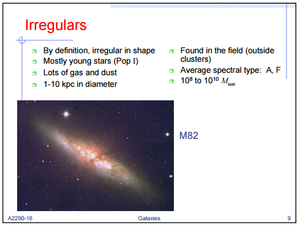
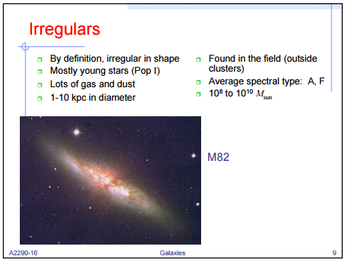
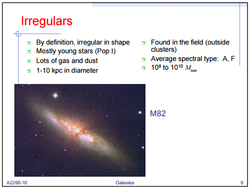
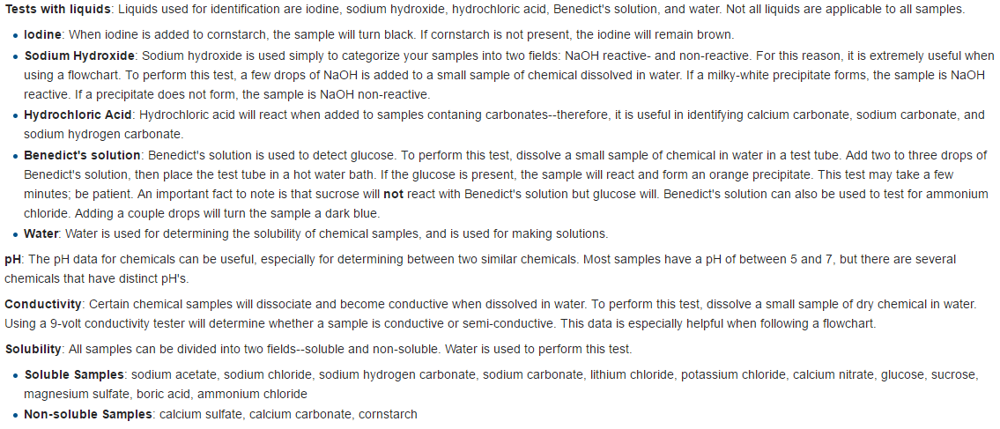
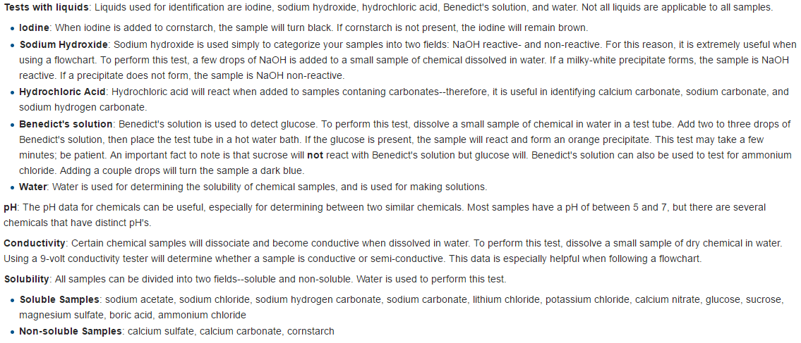
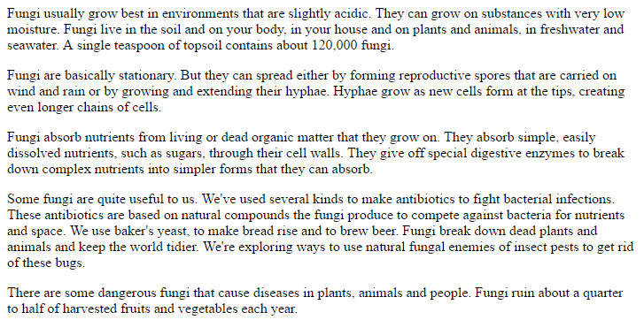
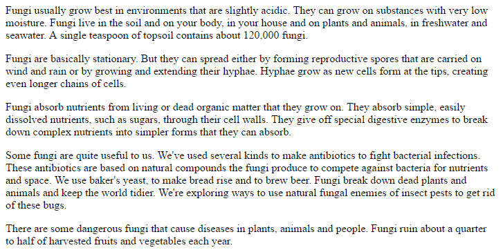

Anatomy & Physiology
A test event centered around the study of the human body. This year's topics are Respiratory, Digestive, and Immune Systems.

Astronomy
A test event centered around the study of celestial bodies/space. This year's topic is galaxies.


 

Chemistry Lab
A test+lab event centered around chemistry questions and experiments. This year's topics are Thermodynamics and Acids & Bases.


Disease Detectives
A test+lab event centered around the study of diseases. This year's topic is Foodborne Illnesses.
Dynamic Planet
A test event centered around the study of earth science. This year's topic is glaciers.

Ecology
A test event centered around the study of the interactions of natural systems.
Experimental Design
An event in which you design an experiment. There's nothing content-wise to study, but you need to practice a lot.
Fermi Questions
A test event in which you estimate quantities of really large/small/hard to measure things.
Forensics
A lab event in which you test evidence to solve a crime.


Game On
An event in which you code a game using Scratch.
Tutorial
Tutorial
Helicopters
A build event in which you make a helicopter and try to make it stay in the air for as long as possible.
Buy helicopter kits here.
Buy helicopter kits here.
Herpetology
A test event centered around the study of amphibians and reptiles.
Hovercraft
A test+build event where you make a hovercraft and study physics.
Materials Science
A test+lab event centered around the study of materials' applications and properties.
Check out this introductory textbook pdf.
Check out this introductory textbook pdf.
Microbe Mission
A test event centered around the study of microbes.


Mission Possible
A build event where you build a Rube Goldberg machine! Focus on energy transfers.
Mousetrap Vehicle
A build event where you build a car that's powered by mousetraps.
Check out this vehicle building guide.
Check out this vehicle building guide.
Optics
A build+test event where you point lasers to a target and study optics.
Remote Sensing
A test event where you use remote sensing data to answer questions about climate change.
Rocks and Minerals
A test event centered around the study of rocks and minerals.
Thermodynamics
An event centered around the study of thermodynamics.
Towers
A build event where you have to build towers that have high efficiency (low weight, high carrying capacity).
A sample tower design. Talk to a captain about where to buy balsa wood.
A sample tower design. Talk to a captain about where to buy balsa wood.
Write It Do It
An event where one person writes about a pre-constructed structure, and the other person has to rebuild the structure based on their partner's write-up.